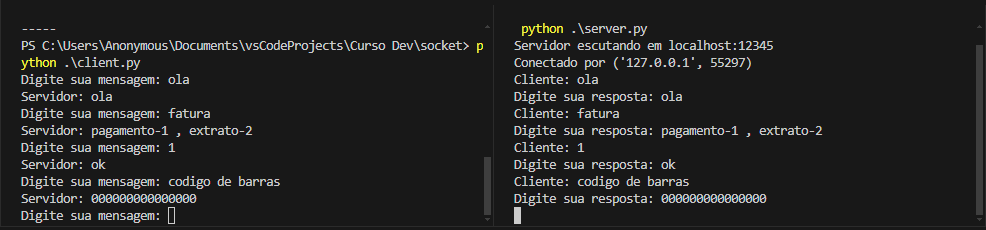

Um socket é um ponto de comunicação que permite a troca de dados entre dispositivos em uma rede. Funciona como uma interface entre a camada de aplicação e a camada de transporte do modelo de rede, facilitando a comunicação entre processos em sistemas diferentes ou no mesmo sistema.
Existem diferentes tipos de sockets, como:
Em resumo, os sockets são fundamentais para a comunicação em redes de computadores, permitindo que aplicações enviem e recebam dados de forma estruturada e eficiente. Ao utilizar sockets, é possível criar sistemas distribuídos, realizar transferências de dados em tempo real e desenvolver uma ampla gama de serviços de rede que são essenciais para o funcionamento da internet e de redes privadas. Sua flexibilidade e robustez fazem dos sockets uma tecnologia indispensável no desenvolvimento de aplicações de rede.
O servidor cria um socket, associa-o a um endereço IP e porta, e fica esperando por conexões. O cliente cria um socket e se conecta ao servidor, permitindo a troca de dados entre eles.
 Exemplo De Comunicação Cliente Servidor